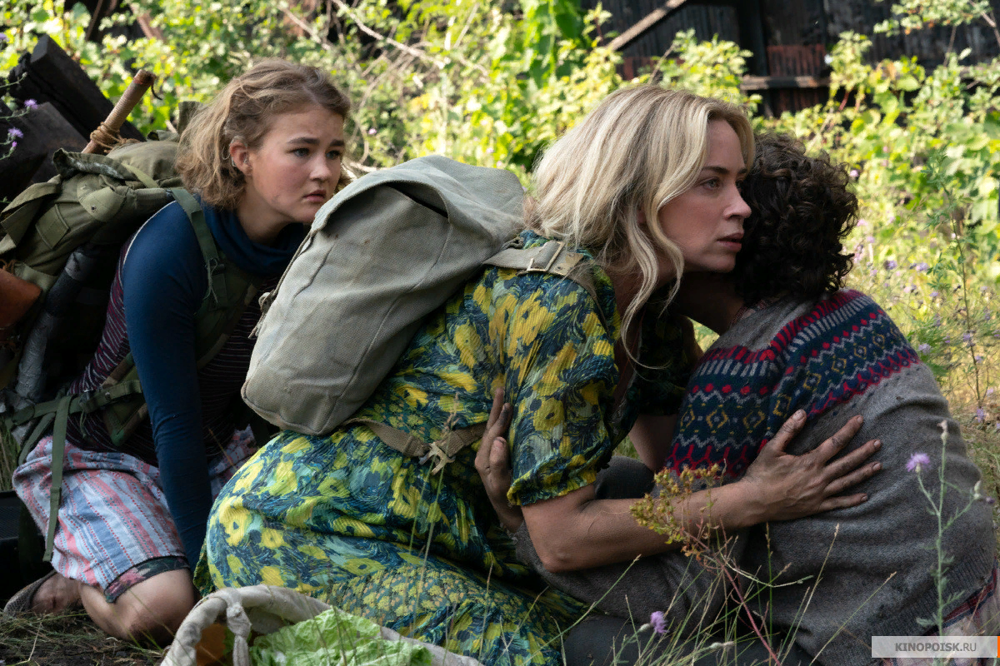
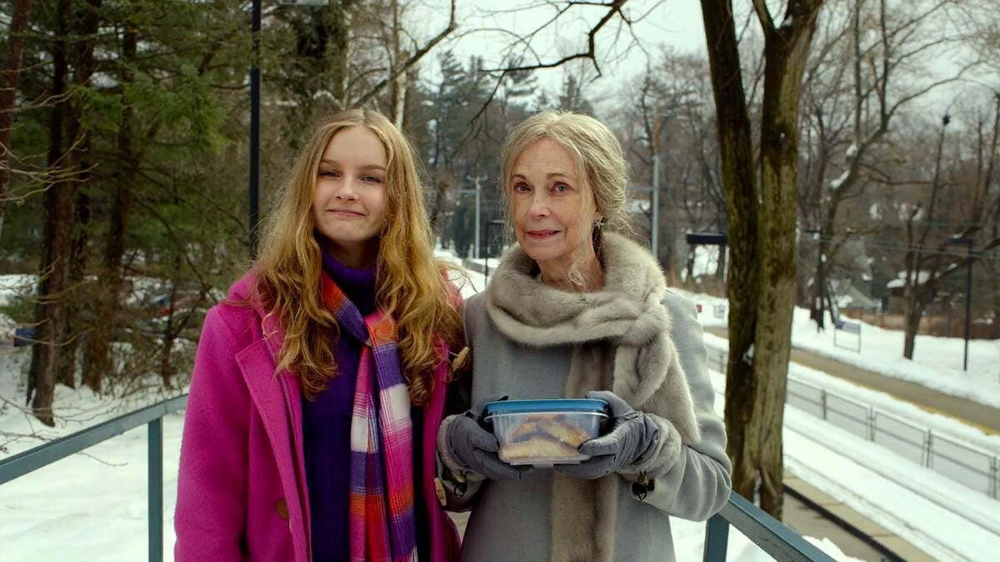
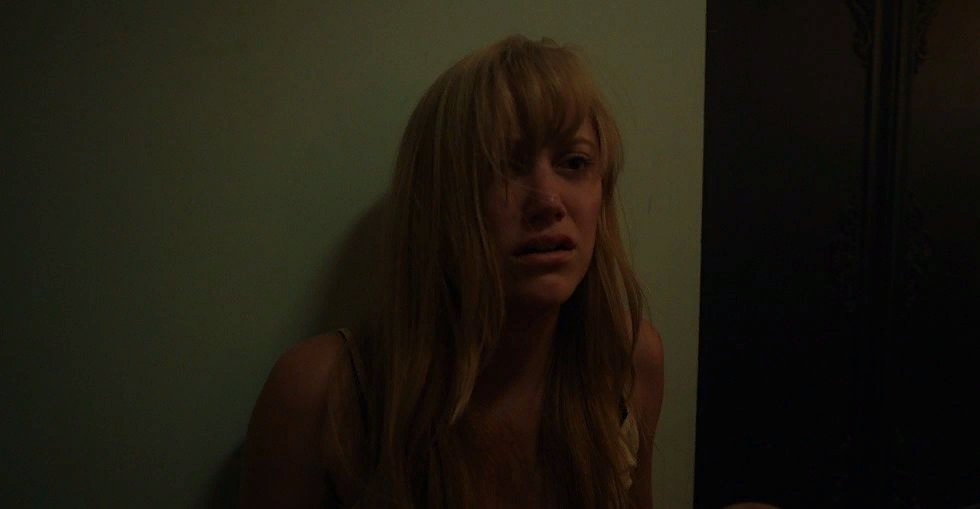
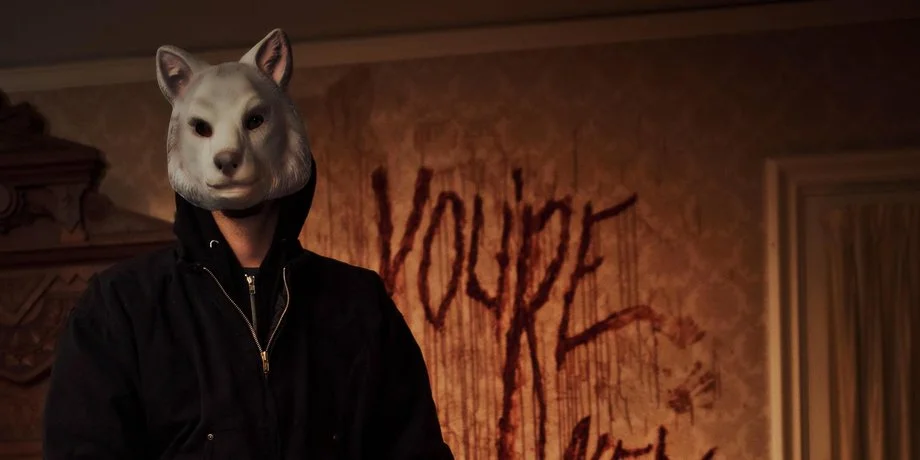
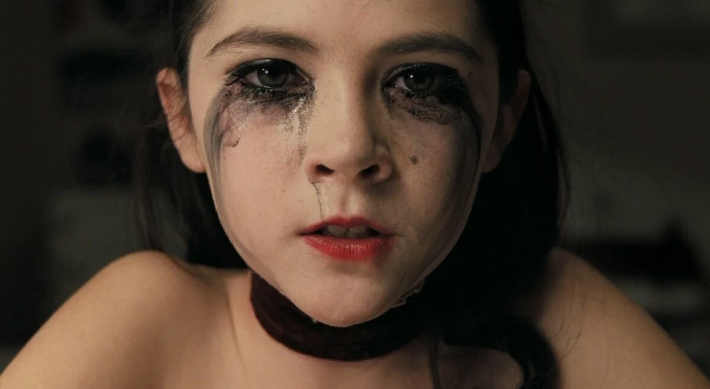

А вы знали, что в США людей, умерших от сердечного приступа во время просмотра фильмов
ужасов,
больше,
чем
тех, кто умер во время прыжков с парашютом?
Вот моя собственная подборка фильмов ужасов:
5 место: "Тихое место"
Фильм повествует нам о семье Эбботов. Им приходится общаться жестами и не издавать ни звука. Все дело в иноземных существах, которые слепы, но обладают уникальным слухом. Ли и Эвелин родители троих детей по максимуму стараются звукоизолировать свой дом, чтобы выжить. Практически все ключевые сцены фильма происходят в абсолютной тишине. Благодаря этому художественному приему зритель проникается атмосферой фильма и начинает слышать каждый шорох и шелест листьев. Фильм становится ещё интересней, когда у пары рождается третий ребенок. Младенец становится причиной многих напряженных моментов в киноленте.
Напряженный и жуткий. Именно так я могу описать этот фильм. Постоянная тишина и неожиданное появление "пришельцев" держат тебя в страхе на протяжении всего фильма.
4 место: "Визит"
Согласитесь, что у вас было такое, когда вас отправляли на каникулы к бабушке и дедушке,а вы не хотели? Так вот, думаю, что после этого фильма, вы будете категорически против этой идеи! Бекка и Тайлер - брат и сестра. Их мать уезжает с новым бойфрендом на отдых, а своих отправляет на недельку к своим родителям. Своё пребывание в гостях дети записывают на камеру, поэтому большинство моментов в фильме мы видим через её объектив. Многие эпизоды держат нас в напряжении и недоумении. Например, бабушка, которая бегает ночью по дому без одежды и нижнего белья или прыгает на стены и издает странные звуки. По-моему мнению, фильм наполнен некомфортной энергетикой и именно этим цепляет зрителя.
3 место: "Оно" (2014 год)
Главная героиня Джей начинает встречаться с молодым человеком. Влюбляется в него с первого взгляда, и буквально на втором свидaнии она отдaется ему на зaднем сидении автомобиля. И после этого начинается самое интересное и захватывающее.
В фильме нет определенного объекта страха. Но есть постоянно меняющийся набор страхов и ужасов, поддерживающие напряжение и оцепенение на протяжении всего фильма. "Оно" может выглядеть как ваш друг или близкий родственник, "Оно" может быть любым человеком. Его нельзя ни уничтожить, ни обмануть.
В фильме нет страшных эпизодов, которые основываются на эффекте неожиданности. Гнетущая атмосфера городка, в котором проживает главная героиня, и пасмурная погода заставляет зрителей тревожно вглядываться в экран в поисках опасности.
2 место: "Тебе конец!"
Богатая пожилая супружеская пара отмечает 35-ую годовщину свадьбы. На празднование приезжают дети. Загвоздка в том, что все терпеть друг друга не могут. А потом, начинается и самое интересное. В дом врывается группа неизвестных в масках животных.
Атмосфера жесткого слэшера с кучей эффектных и запоминающихся смертоубийств - изюминка данной неожиданной для ценителей хорроров картины. В фильме нет каких-либо излишеств, которые могли бы оттолкнуть вас от просмотра.
1 место: "Дитя тьмы"
Увидела фильм впервые, когда мне было 12. Была под глубоким впечатлением и в диком ужасе. спустя 7 лет мало что изменилось. Фильм рассказывает о трагедии семьи. Смерть ребенка в утробе. Отношения в семье разрушены, сломанная психика жены. Возможно, сюжет не новый и достаточно примитивный, но то, как снят фильм, дает нам особую атмосферу и держит в напряжении. Музыкальное сопровождение фильма заслуживает особого внимания. Именно оно создает особое напряжение именно тогда, когда это надо. Хороший хоррор, жестокость, запутанная история. Именно такой фильм заслуживает первое место.
